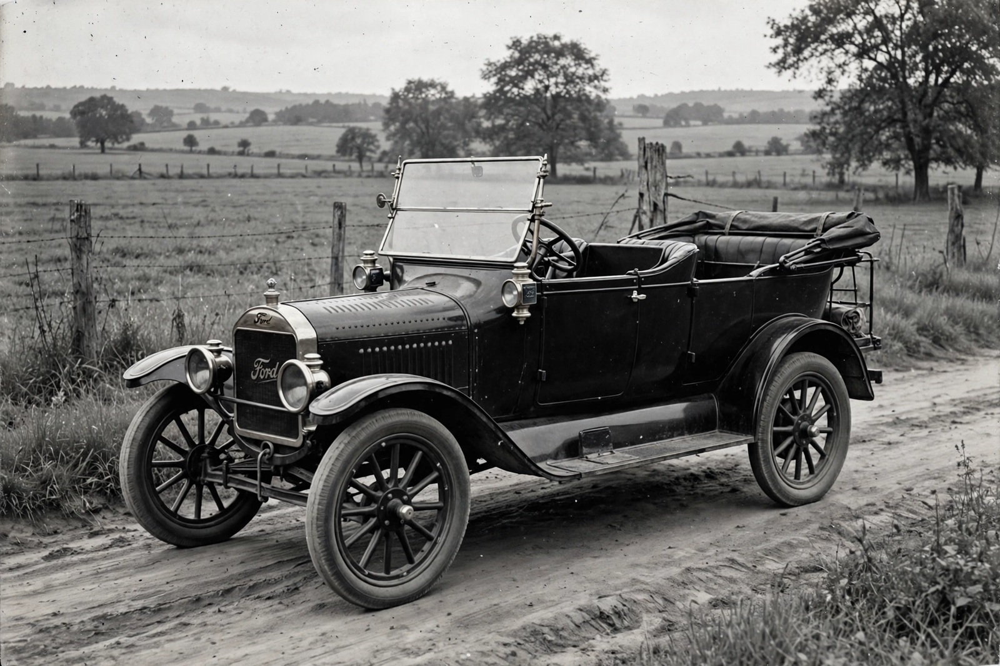

Ford Model T
From Wikipedia, the free encyclopedia

A Model T Ford.The Ford Model T is an automobile produced by the Ford Motor Company from 1908 to 1927, generally regarded as the first mass-affordable car. Conceived by Henry Ford as practical, cheap transport for ordinary people, its price fell from about $850 in 1908 to under $300 by the mid-1920s thanks to the moving assembly line; some 15 million were built, and by the early 1920s most cars on the road worldwide were Model Ts — \'the car that put the world on wheels\'.
Design
Engineers Childe Harold Wills, Joseph Galamb and Eugene Farkas designed a simple, rugged car: a 2.9-litre side-valve four (20 hp), two-speed planetary transmission operated by pedals, transverse leaf springs, and high ground clearance for rutted roads. Vanadium steel gave strength without weight. Black japan enamel — the only colour after 1913 because it dried fastest — prompted the (loosely attributed) quip that customers could have \'any colour so long as it is black\'.
Production revolution
At Highland Park, Ford introduced the moving assembly line in 1913, cutting chassis build time from 12 hours 28 minutes to about 1 hour 33 minutes; the vast River Rouge complex followed. Ford\'s $5 day (1914) doubled typical pay, creating customers of his own workers and redefining industrial labour.
End and legacy
By 1927 the T was obsolete beside Chevrolet\'s more modern, annually restyled cars; Ford shut down for months to retool for the Model A. Voted \'Car of the Century\' in 1999, the Model T created mass motoring, suburbs, service stations and the modern traffic world.